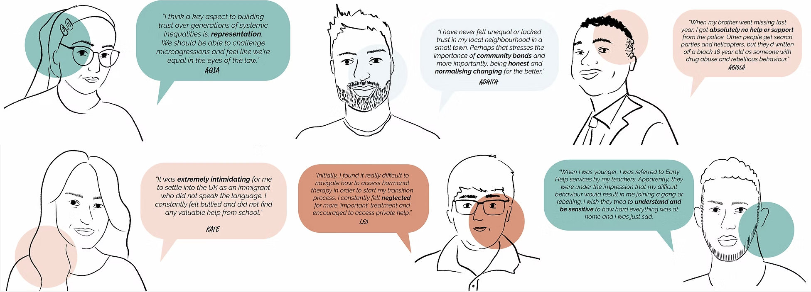
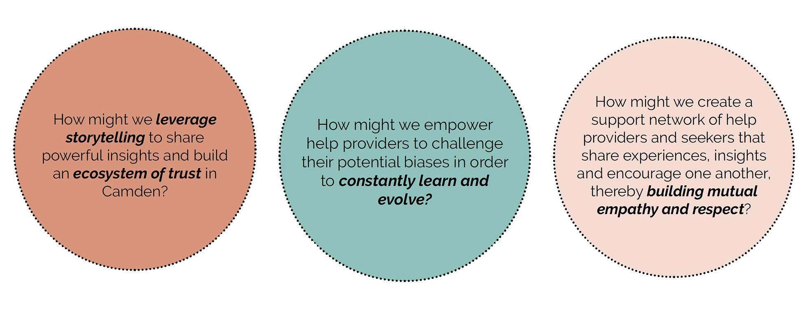
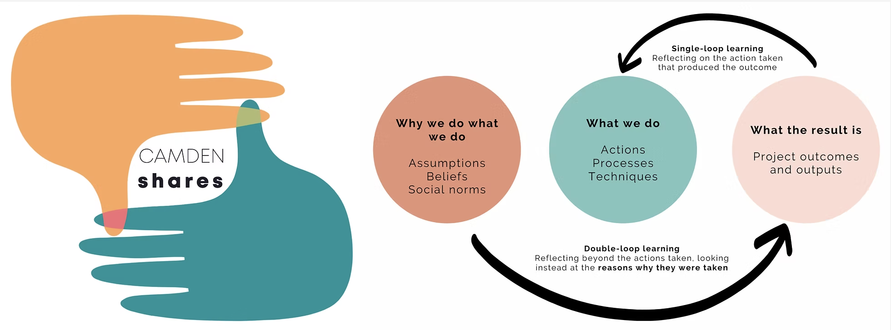

The Challenge
How might we rebuild trust between families and the services designed to help them?
Camden Early Help was facing a critical problem: families who needed support were not accessing it. Frontline workers reported that trust was the central barrier. Services existed. Families were not engaging. The gap between what was offered and what was received was not a communication problem. It was a relationship problem.
Our brief was to understand this gap from the inside, from the perspective of families and workers alike, and to design tools that could help bridge it.
"We offer the help. But they have to trust us enough to take it."
Frontline worker, Camden Early HelpMy Approach
Listening before designing
People are at the heart of participatory design, and the ethos of Camden Early Help. Therefore, it was imperative to immerse in user research that engaged with the various stakeholders such as industry experts, Camden Early Help providers, Changemaker families in Camden that volunteered to help improve the service and local communities in the borough.
Co-design workshops were conducted using creative tools and methodologies to evoke Camden community members to express their emotions, share feedback in a manner that was sensitive, empathetic and provided people with the material engagement to be vulnerable and transparent. An integral part of the primary research process was to conduct one-on-one interviews with different stakeholders; experts, changemaker families volunteering to feedback the Camden Early Help services and local community residents.


What I Did
From insight to artefact
Our idea culminated with the formation of a reflective model called 'Camden Shares.' The idea is to transcend from a single loop learning which is reflection on the action taken. On the other hand, incorporating a double loop learning implies reflection beyond the actions taken and instead looking at the reasons why these were taken and the thought process behind it. This would assist the help providers to unearth the underlying assumptions, beliefs and social norms that trigger us to conduct the actions that we do.
I also produced a synthesis presentation for senior leadership, translating the research into strategic recommendations that connected ground-level findings to systemic service design changes.


Outcomes & Impact
What changed
The reflective practice tools were presented to Camden Early Help and integrated into worker training. The synthesis presentation was delivered to senior leadership and described as one of the most impactful pieces of research the team had received.
Beyond the immediate deliverables, the project shifted how the team thought about the design process itself — establishing co-design as a legitimate and valuable part of service development within Camden Early Help.
Key outcome
"By far the best presentation I have seen in a long time. The voice of families is energising and inspiring. A great reminder to involve the people it matters to most. Thanks" - Head of Family Help, Camden Early Help



What I learned
This project taught me that the most important design decisions are often not about outputs, they are about the design process. The act of doing the research alongside workers and families, rather than reporting back to them, was itself a form of service design.
This project emerged with the brief to envision what good help looks like for the communities of Camden. As we delved into the research, we understood the complexity of the problems faced by help-seekers as they navigate through barriers of inequality and lack of trust. Therefore, Camden Shares aims to provide a meaningful strategy for the help providers to constantly reflect and evaluate their service. Authentic conversations, active listening and a transparent channel of communication between the help providers and seekers would help bridge the gap. Ultimately, the purpose is to create an ecosystem of trust involving empathy and compassion in Camden communities
If I were doing this again: I would honour the human aspect of service design. This project deepened my conviction that trust is the foundational layer of any public service. You cannot design your way around a broken relationship. You have to start there.